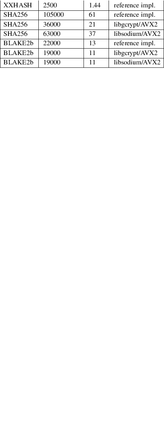
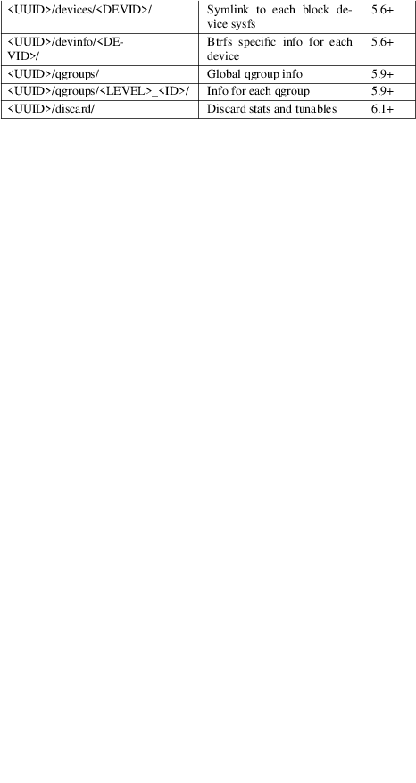

btrfs − topics about the BTRFS filesystem (mount options, supported file attributes and other)
This document describes topics related to BTRFS that are not specific to the tools. Currently covers:
|
1. |
mount options |
|||
|
2. |
filesystem features |
|||
|
3. |
checksum algorithms |
|||
|
4. |
compression |
|||
|
5. |
sysfs interface |
|||
|
6. |
filesystem exclusive operations |
|||
|
7. |
filesystem limits |
|||
|
8. |
bootloader support |
|||
|
9. |
file attributes |
|||
|
10. |
zoned mode |
|||
|
11. |
control device |
|||
|
12. |
filesystems with multiple block group profiles |
|||
|
13. |
seeding device |
|||
|
14. |
RAID56 status and recommended practices |
|||
|
15. |
storage model, hardware considerations |
BTRFS
SPECIFIC MOUNT OPTIONS
This section describes mount options specific to BTRFS. For
the generic mount options please refer to mount(8)
manual page. The options are sorted alphabetically
(discarding the no prefix).
NOTE:
Most mount options apply to the whole filesystem and only options in the first mounted subvolume will take effect. This is due to lack of implementation and may change in the future. This means that (for example) you can't set per−subvolume nodatacow, nodatasum, or compress using mount options. This should eventually be fixed, but it has proved to be difficult to implement correctly within the Linux VFS framework.
Mount options
are processed in order, only the last occurrence of an
option takes effect and may disable other options due to
constraints (see e.g. nodatacow and compress).
The output of mount command shows which options have
been applied.
acl, noacl
(default: on)
Enable/disable support for POSIX Access Control Lists (ACLs). See the acl(5) manual page for more information about ACLs.
The support for ACL is build−time configurable (BTRFS_FS_POSIX_ACL) and mount fails if acl is requested but the feature is not compiled in.
autodefrag, noautodefrag
(since: 3.0, default: off)
Enable automatic file defragmentation. When enabled, small random writes into files (in a range of tens of kilobytes, currently it's 64KiB) are detected and queued up for the defragmentation process. Not well suited for large database workloads.
The read latency may increase due to reading the adjacent blocks that make up the range for defragmentation, successive write will merge the blocks in the new location.
WARNING:
Defragmenting with Linux kernel versions < 3.9 or ⥠3.14−rc2 as well as with Linux stable kernel versions ⥠3.10.31, ⥠3.12.12 or ⥠3.13.4 will break up the reflinks of COW data (for example files copied with cp −−reflink, snapshots or de−duplicated data). This may cause considerable increase of space usage depending on the broken up reflinks.
barrier, nobarrier
(default: on)
Ensure that all IO write operations make it through the device cache and are stored permanently when the filesystem is at its consistency checkpoint. This typically means that a flush command is sent to the device that will synchronize all pending data and ordinary metadata blocks, then writes the superblock and issues another flush.
The write flushes incur a slight hit and also prevent the IO block scheduler to reorder requests in a more effective way. Disabling barriers gets rid of that penalty but will most certainly lead to a corrupted filesystem in case of a crash or power loss. The ordinary metadata blocks could be yet unwritten at the time the new superblock is stored permanently, expecting that the block pointers to metadata were stored permanently before.
On a device with a volatile battery−backed write−back cache, the nobarrier option will not lead to filesystem corruption as the pending blocks are supposed to make it to the permanent storage.
check_int, check_int_data, check_int_print_mask=<value>
(since: 3.0, default: off)
These debugging options control the behavior of the integrity checking module (the BTRFS_FS_CHECK_INTEGRITY config option required). The main goal is to verify that all blocks from a given transaction period are properly linked.
check_int enables the integrity checker module, which examines all block write requests to ensure on−disk consistency, at a large memory and CPU cost.
check_int_data includes extent data in the integrity checks, and implies the check_int option.
check_int_print_mask takes a bitmask of BTRFSIC_PRINT_MASK_* values as defined in fs/btrfs/check−integrity.c, to control the integrity checker module behavior.
See comments at the top of fs/btrfs/check−integrity.c for more information.
clear_cache
Force clearing and rebuilding of the free space cache if something has gone wrong.
For free space cache v1, this only clears (and, unless nospace_cache is used, rebuilds) the free space cache for block groups that are modified while the filesystem is mounted with that option. To actually clear an entire free space cache v1, see btrfs check −−clear−space−cache v1.
For free space cache v2, this clears the entire free space cache. To do so without requiring to mounting the filesystem, see btrfs check −−clear−space−cache v2.
See also: space_cache.
commit=<seconds>
(since: 3.12, default: 30)
Set the interval of periodic transaction commit when data are synchronized to permanent storage. Higher interval values lead to larger amount of unwritten data, which has obvious consequences when the system crashes. The upper bound is not forced, but a warning is printed if it's more than 300 seconds (5 minutes). Use with care.
compress,
compress=<type[:level]>, compress−force,
compress−force=<type[:level]>
(default: off, level support since: 5.1)
Control BTRFS file data compression. Type may be specified as zlib, lzo, zstd or no (for no compression, used for remounting). If no type is specified, zlib is used. If compress−force is specified, then compression will always be attempted, but the data may end up uncompressed if the compression would make them larger.
Both zlib and zstd (since version 5.1) expose the compression level as a tunable knob with higher levels trading speed and memory (zstd) for higher compression ratios. This can be set by appending a colon and the desired level. ZLIB accepts the range [1, 9] and ZSTD accepts [1, 15]. If no level is set, both currently use a default level of 3. The value 0 is an alias for the default level.
Otherwise some simple heuristics are applied to detect an incompressible file. If the first blocks written to a file are not compressible, the whole file is permanently marked to skip compression. As this is too simple, the compress−force is a workaround that will compress most of the files at the cost of some wasted CPU cycles on failed attempts. Since kernel 4.15, a set of heuristic algorithms have been improved by using frequency sampling, repeated pattern detection and Shannon entropy calculation to avoid that.
NOTE:
If compression is enabled, nodatacow and nodatasum are disabled.
datacow, nodatacow
(default: on)
Enable data copy−on−write for newly created files. Nodatacow implies nodatasum, and disables compression. All files created under nodatacow are also set the NOCOW file attribute (see chattr(1)).
NOTE:
If nodatacow or nodatasum are enabled, compression is disabled.
Updates in−place improve performance for workloads that do frequent overwrites, at the cost of potential partial writes, in case the write is interrupted (system crash, device failure).
datasum, nodatasum
(default: on)
Enable data checksumming for newly created files. Datasum implies datacow, i.e. the normal mode of operation. All files created under nodatasum inherit the "no checksums" property, however there's no corresponding file attribute (see chattr(1)).
NOTE:
If nodatacow or nodatasum are enabled, compression is disabled.
There is a slight performance gain when checksums are turned off, the corresponding metadata blocks holding the checksums do not need to updated. The cost of checksumming of the blocks in memory is much lower than the IO, modern CPUs feature hardware support of the checksumming algorithm.
degraded
(default: off)
Allow mounts with less devices than the RAID profile constraints require. A read−write mount (or remount) may fail when there are too many devices missing, for example if a stripe member is completely missing from RAID0.
Since 4.14, the constraint checks have been improved and are verified on the chunk level, not at the device level. This allows degraded mounts of filesystems with mixed RAID profiles for data and metadata, even if the device number constraints would not be satisfied for some of the profiles.
Example: metadata −− raid1, data −− single, devices −− /dev/sda, /dev/sdb
Suppose the data are completely stored on sda, then missing sdb will not prevent the mount, even if 1 missing device would normally prevent (any) single profile to mount. In case some of the data chunks are stored on sdb, then the constraint of single/data is not satisfied and the filesystem cannot be mounted.
device=<devicepath>
Specify a path to a device that will be scanned for BTRFS filesystem during mount. This is usually done automatically by a device manager (like udev) or using the btrfs device scan command (e.g. run from the initial ramdisk). In cases where this is not possible the device mount option can help.
NOTE:
Booting e.g. a RAID1 system may fail even if all filesystem's device paths are provided as the actual device nodes may not be discovered by the system at that point.
discard, discard=sync, discard=async, nodiscard
(default: async when devices support it since 6.2, async support since: 5.6)
Enable discarding of freed file blocks. This is useful for SSD devices, thinly provisioned LUNs, or virtual machine images; however, every storage layer must support discard for it to work.
In the synchronous mode (sync or without option value), lack of asynchronous queued TRIM on the backing device TRIM can severely degrade performance, because a synchronous TRIM operation will be attempted instead. Queued TRIM requires newer than SATA revision 3.1 chipsets and devices.
The asynchronous mode (async) gathers extents in larger chunks before sending them to the devices for TRIM. The overhead and performance impact should be negligible compared to the previous mode and it's supposed to be the preferred mode if needed.
If it is not necessary to immediately discard freed blocks, then the fstrim tool can be used to discard all free blocks in a batch. Scheduling a TRIM during a period of low system activity will prevent latent interference with the performance of other operations. Also, a device may ignore the TRIM command if the range is too small, so running a batch discard has a greater probability of actually discarding the blocks.
enospc_debug, noenospc_debug
(default: off)
Enable verbose output for some ENOSPC conditions. It's safe to use but can be noisy if the system reaches near−full state.
fatal_errors=<action>
(since: 3.4, default: bug)
Action to take when encountering a fatal error.
|
bug |
BUG() on a fatal error, the system will stay in the crashed state and may be still partially usable, but reboot is required for full operation | ||
|
panic |
panic() on a fatal error, depending on other system configuration, this may be followed by a reboot. Please refer to the documentation of kernel boot parameters, e.g. panic, oops or crashkernel. |
flushoncommit, noflushoncommit
(default: off)
This option forces any data dirtied by a write in a prior transaction to commit as part of the current commit, effectively a full filesystem sync.
This makes the committed state a fully consistent view of the file system from the application's perspective (i.e. it includes all completed file system operations). This was previously the behavior only when a snapshot was created.
When off, the filesystem is consistent but buffered writes may last more than one transaction commit.
fragment=<type>
(depends on compile−time option BTRFS_DEBUG, since: 4.4, default: off)
A debugging helper to intentionally fragment given type of block groups. The type can be data, metadata or all. This mount option should not be used outside of debugging environments and is not recognized if the kernel config option BTRFS_DEBUG is not enabled.
nologreplay
(default: off, even read−only)
The tree−log contains pending updates to the filesystem until the full commit. The log is replayed on next mount, this can be disabled by this option. See also treelog. Note that nologreplay is the same as norecovery.
WARNING:
Currently, the tree log is replayed even with a read−only mount! To disable that behaviour, mount also with nologreplay.
max_inline=<bytes>
(default: min(2048, page size) )
Specify the maximum amount of space, that can be inlined in a metadata b−tree leaf. The value is specified in bytes, optionally with a K suffix (case insensitive). In practice, this value is limited by the filesystem block size (named sectorsize at mkfs time), and memory page size of the system. In case of sectorsize limit, there's some space unavailable due to leaf headers. For example, a 4KiB sectorsize, maximum size of inline data is about 3900 bytes.
Inlining can be completely turned off by specifying 0. This will increase data block slack if file sizes are much smaller than block size but will reduce metadata consumption in return.
NOTE:
The default value has changed to 2048 in kernel 4.6.
metadata_ratio=<value>
(default: 0, internal logic)
Specifies that 1 metadata chunk should be allocated after every value data chunks. Default behaviour depends on internal logic, some percent of unused metadata space is attempted to be maintained but is not always possible if there's not enough space left for chunk allocation. The option could be useful to override the internal logic in favor of the metadata allocation if the expected workload is supposed to be metadata intense (snapshots, reflinks, xattrs, inlined files).
norecovery
(since: 4.5, default: off)
Do not attempt any data recovery at mount time. This will disable logreplay and avoids other write operations. Note that this option is the same as nologreplay.
NOTE:
The opposite option recovery used to have different meaning but was changed for consistency with other filesystems, where norecovery is used for skipping log replay. BTRFS does the same and in general will try to avoid any write operations.
rescan_uuid_tree
(since: 3.12, default: off)
Force check and rebuild procedure of the UUID tree. This should not normally be needed.
|
rescue |
(since: 5.9) |
Modes allowing mount with damaged filesystem structures.
|
• |
usebackuproot (since: 5.9, replaces standalone option usebackuproot) | ||
|
• |
nologreplay (since: 5.9, replaces standalone option nologreplay) | ||
|
• |
ignorebadroots, ibadroots (since: 5.11) | ||
|
• |
ignoredatacsums, idatacsums (since: 5.11) | ||
|
• |
all (since: 5.9) |
skip_balance
(since: 3.3, default: off)
Skip automatic resume of an interrupted balance operation. The operation can later be resumed with btrfs balance resume, or the paused state can be removed with btrfs balance cancel. The default behaviour is to resume an interrupted balance immediately after a volume is mounted.
space_cache, space_cache=<version>, nospace_cache
(nospace_cache since: 3.2, space_cache=v1 and space_cache=v2 since 4.5, default: space_cache=v2)
Options to control the free space cache. The free space cache greatly improves performance when reading block group free space into memory. However, managing the space cache consumes some resources, including a small amount of disk space.
There are two implementations of the free space cache. The original one, referred to as v1, used to be a safe default but has been superseded by v2. The v1 space cache can be disabled at mount time with nospace_cache without clearing.
On very large filesystems (many terabytes) and certain workloads, the performance of the v1 space cache may degrade drastically. The v2 implementation, which adds a new b−tree called the free space tree, addresses this issue. Once enabled, the v2 space cache will always be used and cannot be disabled unless it is cleared. Use clear_cache,space_cache=v1 or clear_cache,nospace_cache to do so. If v2 is enabled, and v1 space cache will be cleared (at the first mount) and kernels without v2 support will only be able to mount the filesystem in read−only mode. On an unmounted filesystem the caches (both versions) can be cleared by "btrfs check −−clear−space−cache".
The btrfs−check(8) and :doc:`mkfs.btrfs(8)<mkfs.btrfs> commands have full v2 free space cache support since v4.19.
If a version is not explicitly specified, the default implementation will be chosen, which is v2.
ssd, ssd_spread, nossd, nossd_spread
(default: SSD autodetected)
Options to control SSD allocation schemes. By default, BTRFS will enable or disable SSD optimizations depending on status of a device with respect to rotational or non−rotational type. This is determined by the contents of /sys/block/DEV/queue/rotational). If it is 0, the ssd option is turned on. The option nossd will disable the autodetection.
The optimizations make use of the absence of the seek penalty that's inherent for the rotational devices. The blocks can be typically written faster and are not offloaded to separate threads.
NOTE:
Since 4.14, the block layout optimizations have been dropped. This used to help with first generations of SSD devices. Their FTL (flash translation layer) was not effective and the optimization was supposed to improve the wear by better aligning blocks. This is no longer true with modern SSD devices and the optimization had no real benefit. Furthermore it caused increased fragmentation. The layout tuning has been kept intact for the option ssd_spread.
The ssd_spread mount option attempts to allocate into bigger and aligned chunks of unused space, and may perform better on low−end SSDs. ssd_spread implies ssd, enabling all other SSD heuristics as well. The option nossd will disable all SSD options while nossd_spread only disables ssd_spread.
subvol=<path>
Mount subvolume from path rather than the toplevel subvolume. The path is always treated as relative to the toplevel subvolume. This mount option overrides the default subvolume set for the given filesystem.
subvolid=<subvolid>
Mount subvolume specified by a subvolid number rather than the toplevel subvolume. You can use btrfs subvolume list of btrfs subvolume show to see subvolume ID numbers. This mount option overrides the default subvolume set for the given filesystem.
NOTE:
If both subvolid and subvol are specified, they must point at the same subvolume, otherwise the mount will fail.
thread_pool=<number>
(default: min(NRCPUS + 2, 8) )
The number of worker threads to start. NRCPUS is number of on−line CPUs detected at the time of mount. Small number leads to less parallelism in processing data and metadata, higher numbers could lead to a performance hit due to increased locking contention, process scheduling, cache−line bouncing or costly data transfers between local CPU memories.
treelog, notreelog
(default: on)
Enable the tree logging used for fsync and O_SYNC writes. The tree log stores changes without the need of a full filesystem sync. The log operations are flushed at sync and transaction commit. If the system crashes between two such syncs, the pending tree log operations are replayed during mount.
WARNING:
Currently, the tree log is replayed even with a read−only mount! To disable that behaviour, also mount with nologreplay.
The tree log could contain new files/directories, these would not exist on a mounted filesystem if the log is not replayed.
usebackuproot
(since: 4.6, default: off)
Enable autorecovery attempts if a bad tree root is found at mount time. Currently this scans a backup list of several previous tree roots and tries to use the first readable. This can be used with read−only mounts as well.
NOTE:
This option has replaced recovery.
user_subvol_rm_allowed
(default: off)
Allow subvolumes to be deleted by their respective owner. Otherwise, only the root user can do that.
NOTE:
Historically, any user could create a snapshot even if he was not owner of the source subvolume, the subvolume deletion has been restricted for that reason. The subvolume creation has been restricted but this mount option is still required. This is a usability issue. Since 4.18, the rmdir(2) syscall can delete an empty subvolume just like an ordinary directory. Whether this is possible can be detected at runtime, see rmdir_subvol feature in FILESYSTEM FEATURES.
DEPRECATED
MOUNT OPTIONS
List of mount options that have been removed, kept for
backward compatibility.
recovery
(since: 3.2, default: off, deprecated since: 4.5)
NOTE:
This option has been replaced by usebackuproot and should not be used but will work on 4.5+ kernels.
inode_cache, noinode_cache
(removed in: 5.11, since: 3.0, default: off)
NOTE:
The functionality has been removed in 5.11, any stale data created by previous use of the inode_cache option can be removed by btrfs check −−clear−ino−cache.
NOTES ON
GENERIC MOUNT OPTIONS
Some of the general mount options from mount(8) that
affect BTRFS and are worth mentioning.
noatime
under read intensive work−loads, specifying noatime significantly improves performance because no new access time information needs to be written. Without this option, the default is relatime, which only reduces the number of inode atime updates in comparison to the traditional strictatime. The worst case for atime updates under relatime occurs when many files are read whose atime is older than 24 h and which are freshly snapshotted. In that case the atime is updated and COW happens − for each file − in bulk. See also https://lwn.net/Articles/499293/ − Atime and btrfs: a bad combination? (LWN, 2012−05−31).
Note that noatime may break applications that rely on atime uptimes like the venerable Mutt (unless you use maildir mailboxes).
The basic set of filesystem features gets extended over time. The backward compatibility is maintained and the features are optional, need to be explicitly asked for so accidental use will not create incompatibilities.
There are
several classes and the respective tools to manage the
features:
at mkfs time only
This is namely for core structures, like the b−tree nodesize or checksum algorithm, see mkfs.btrfs(8) for more details.
after mkfs, on an unmounted filesystem
Features that may optimize internal structures or add new structures to support new functionality, see btrfstune(8). The command btrfs inspect−internal dump−super /dev/sdx will dump a superblock, you can map the value of incompat_flags to the features listed below
after mkfs, on a mounted filesystem
The features of a filesystem (with a given UUID) are listed in /sys/fs/btrfs/UUID/features/, one file per feature. The status is stored inside the file. The value 1 is for enabled and active, while 0 means the feature was enabled at mount time but turned off afterwards.
Whether a particular feature can be turned on a mounted filesystem can be found in the directory /sys/fs/btrfs/features/, one file per feature. The value 1 means the feature can be enabled.
List of
features (see also mkfs.btrfs(8) section
FILESYSTEM FEATURES):
big_metadata
(since: 3.4)
the filesystem uses nodesize for metadata blocks, this can be bigger than the page size
block_group_tree
(since: 6.1)
block group item representation using a dedicated b−tree, this can greatly reduce mount time for large filesystems
compress_lzo
(since: 2.6.38)
the lzo compression has been used on the filesystem, either as a mount option or via btrfs filesystem defrag.
compress_zstd
(since: 4.14)
the zstd compression has been used on the filesystem, either as a mount option or via btrfs filesystem defrag.
default_subvol
(since: 2.6.34)
the default subvolume has been set on the filesystem
extended_iref
(since: 3.7)
increased hardlink limit per file in a directory to 65536, older kernels supported a varying number of hardlinks depending on the sum of all file name sizes that can be stored into one metadata block
free_space_tree
(since: 4.5)
free space representation using a dedicated b−tree, successor of v1 space cache
metadata_uuid
(since: 5.0)
the main filesystem UUID is the metadata_uuid, which stores the new UUID only in the superblock while all metadata blocks still have the UUID set at mkfs time, see btrfstune(8) for more
mixed_backref
(since: 2.6.31)
the last major disk format change, improved backreferences, now default
mixed_groups
(since: 2.6.37)
mixed data and metadata block groups, i.e. the data and metadata are not separated and occupy the same block groups, this mode is suitable for small volumes as there are no constraints how the remaining space should be used (compared to the split mode, where empty metadata space cannot be used for data and vice versa)
on the other hand, the final layout is quite unpredictable and possibly highly fragmented, which means worse performance
no_holes
(since: 3.14)
improved representation of file extents where holes are not explicitly stored as an extent, saves a few percent of metadata if sparse files are used
raid1c34
(since: 5.5)
extended RAID1 mode with copies on 3 or 4 devices respectively
|
RAID56 |
(since: 3.9) |
the filesystem contains or contained a RAID56 profile of block groups
rmdir_subvol
(since: 4.18)
indicate that rmdir(2) syscall can delete an empty subvolume just like an ordinary directory. Note that this feature only depends on the kernel version.
skinny_metadata
(since: 3.10)
reduced−size metadata for extent references, saves a few percent of metadata
send_stream_version
(since: 5.10)
number of the highest supported send stream version
supported_checksums
(since: 5.5)
list of checksum algorithms supported by the kernel module, the respective modules or built−in implementing the algorithms need to be present to mount the filesystem, see CHECKSUM ALGORITHMS
supported_sectorsizes
(since: 5.13)
list of values that are accepted as sector sizes (mkfs.btrfs −−sectorsize) by the running kernel
supported_rescue_options
(since: 5.11)
list of values for the mount option rescue that are supported by the running kernel, see btrfs(5)
|
zoned |
(since: 5.12) |
zoned mode is allocation/write friendly to host−managed zoned devices, allocation space is partitioned into fixed−size zones that must be updated sequentially, see ZONED MODE
A swapfile, when active, is a file−backed swap area. It is supported since kernel 5.0. Use swapon(8) to activate it, until then (respectively again after deactivating it with swapoff(8)) it's just a normal file (with NODATACOW set), for which the special restrictions for active swapfiles don't apply.
There are some limitations of the implementation in BTRFS and Linux swap subsystem:
|
• |
filesystem − must be only single device | ||
|
• |
filesystem − must have only single data profile | ||
|
• |
subvolume − cannot be snapshotted if it contains any active swapfiles | ||
|
• |
swapfile − must be preallocated (i.e. no holes) | ||
|
• |
swapfile − must be NODATACOW (i.e. also NODATASUM, no compression) |
The limitations come namely from the COW−based design and mapping layer of blocks that allows the advanced features like relocation and multi−device filesystems. However, the swap subsystem expects simpler mapping and no background changes of the file block location once they've been assigned to swap.
With active swapfiles, the following whole−filesystem operations will skip swapfile extents or may fail:
|
• |
balance − block groups with extents of any active swapfiles are skipped and reported, the rest will be processed normally | ||
|
• |
resize grow − unaffected | ||
|
• |
resize shrink − works as long as the extents of any active swapfiles are outside of the shrunk range | ||
|
• |
device add − if the new devices do not interfere with any already active swapfiles this operation will work, though no new swapfile can be activated afterwards | ||
|
• |
device delete − if the device has been added as above, it can be also deleted | ||
|
• |
device replace − ditto |
When there are no active swapfiles and a whole−filesystem exclusive operation is running (e.g. balance, device delete, shrink), the swapfiles cannot be temporarily activated. The operation must finish first.
To create and activate a swapfile run the following commands:
# truncate −s 0 swapfile # chattr +C swapfile # fallocate −l 2G swapfile # chmod 0600 swapfile # mkswap swapfile # swapon swapfile
Since version 6.1 it's possible to create the swapfile in a single command (except the activation):
# btrfs filesystem mkswapfile −−size 2G swapfile # swapon swapfile
Please note that the UUID returned by the mkswap utility identifies the swap "filesystem" and because it's stored in a file, it's not generally visible and usable as an identifier unlike if it was on a block device.
Once activated the file will appear in /proc/swaps:
# cat /proc/swaps Filename Type Size Used Priority /path/swapfile file 2097152 0 −2
The swapfile can be created as one−time operation or, once properly created, activated on each boot by the swapon −a command (usually started by the service manager). Add the following entry to /etc/fstab, assuming the filesystem that provides the /path has been already mounted at this point. Additional mount options relevant for the swapfile can be set too (like priority, not the BTRFS mount options).
/path/swapfile none swap defaults 0 0
From now on the subvolume with the active swapfile cannot be snapshotted until the swapfile is deactivated again by swapoff. Then the swapfile is a regular file and the subvolume can be snapshotted again, though this would prevent another activation any swapfile that has been snapshotted. New swapfiles (not snapshotted) can be created and activated.
Otherwise, an inactive swapfile does not affect the containing subvolume. Activation creates a temporary in−memory status and prevents some file operations, but is not stored permanently.
A swapfile can be used for hibernation but it's not straightforward. Before hibernation a resume offset must be written to file /sys/power/resume_offset or the kernel command line parameter resume_offset must be set.
The value is the physical offset on the device. Note that this is not the same value that filefrag prints as physical offset!
Btrfs filesystem uses mapping between logical and physical addresses but here the physical can still map to one or more device−specific physical block addresses. It's the device−specific physical offset that is suitable as resume offset.
Since version 6.1 there's a command btrfs inspect−internal map−swapfile that will print the device physical offset and the adjusted value for /sys/power/resume_offset. Note that the value is divided by page size, i.e. it's not the offset itself.
# btrfs filesystem mkswapfile swapfile # btrfs inspect−internal map−swapfile swapfile Physical start: 811511726080 Resume offset: 198122980
For scripting and convenience the option −r will print just the offset:
# btrfs inspect−internal map−swapfile −r swapfile 198122980
The command map−swapfile also verifies all the requirements, i.e. no holes, single device, etc.
If the swapfile activation fails please verify that you followed all the steps above or check the system log (e.g. dmesg or journalctl) for more information.
Notably, the swapon utility exits with a message that does not say what failed:
# swapon /path/swapfile swapon: /path/swapfile: swapon failed: Invalid argument
The specific reason is likely to be printed to the system log by the btrfs module:
# journalctl −t kernel | grep swapfile kernel: BTRFS warning (device sda): swapfile must have single data profile
Data and metadata are checksummed by default, the checksum is calculated before write and verified after reading the blocks from devices. The whole metadata block has a checksum stored inline in the b−tree node header, each data block has a detached checksum stored in the checksum tree.
There are
several checksum algorithms supported. The default and
backward compatible is crc32c. Since kernel 5.5 there
are three more with different characteristics and
trade−offs regarding speed and strength. The following
list may help you to decide which one to select.
CRC32C (32bit digest)
default, best backward compatibility, very fast, modern CPUs have instruction−level support, not collision−resistant but still good error detection capabilities
XXHASH (64bit digest)
can be used as CRC32C successor, very fast, optimized for modern CPUs utilizing instruction pipelining, good collision resistance and error detection
SHA256 (256bit digest)
a cryptographic−strength hash, relatively slow but with possible CPU instruction acceleration or specialized hardware cards, FIPS certified and in wide use
BLAKE2b (256bit digest)
a cryptographic−strength hash, relatively fast with possible CPU acceleration using SIMD extensions, not standardized but based on BLAKE which was a SHA3 finalist, in wide use, the algorithm used is BLAKE2b−256 that's optimized for 64bit platforms
The digest size affects overall size of data block checksums stored in the filesystem. The metadata blocks have a fixed area up to 256 bits (32 bytes), so there's no increase. Each data block has a separate checksum stored, with additional overhead of the b−tree leaves.
Approximate relative performance of the algorithms, measured against CRC32C using reference software implementations on a 3.5GHz intel CPU:

Many kernels are configured with SHA256 as built−in and not as a module. The accelerated versions are however provided by the modules and must be loaded explicitly (modprobe sha256) before mounting the filesystem to make use of them. You can check in /sys/fs/btrfs/FSID/checksum which one is used. If you see sha256−generic, then you may want to unmount and mount the filesystem again, changing that on a mounted filesystem is not possible. Check the file /proc/crypto, when the implementation is built−in, you'd find
name : sha256 driver : sha256−generic module : kernel priority : 100 ...
while accelerated implementation is e.g.
name : sha256 driver : sha256−avx2 module : sha256_ssse3 priority : 170 ...
Btrfs supports transparent file compression. There are three algorithms available: ZLIB, LZO and ZSTD (since v4.14), with various levels. The compression happens on the level of file extents and the algorithm is selected by file property, mount option or by a defrag command. You can have a single btrfs mount point that has some files that are uncompressed, some that are compressed with LZO, some with ZLIB, for instance (though you may not want it that way, it is supported).
Once the compression is set, all newly written data will be compressed, i.e. existing data are untouched. Data are split into smaller chunks (128KiB) before compression to make random rewrites possible without a high performance hit. Due to the increased number of extents the metadata consumption is higher. The chunks are compressed in parallel.
The algorithms can be characterized as follows regarding the speed/ratio trade−offs:
|
ZLIB |
|||
|
• |
slower, higher compression ratio | ||
|
• |
levels: 1 to 9, mapped directly, default level is 3 | ||
|
• |
good backward compatibility | ||
|
LZO |
|||
|
• |
faster compression and decompression than ZLIB, worse compression ratio, designed to be fast | ||
|
• |
no levels | ||
|
• |
good backward compatibility | ||
|
ZSTD |
|||
|
• |
compression comparable to ZLIB with higher compression/decompression speeds and different ratio | ||
|
• |
levels: 1 to 15, mapped directly (higher levels are not available) | ||
|
• |
since 4.14, levels since 5.1 |
The differences depend on the actual data set and cannot be expressed by a single number or recommendation. Higher levels consume more CPU time and may not bring a significant improvement, lower levels are close to real time.
Typically the compression can be enabled on the whole filesystem, specified for the mount point. Note that the compression mount options are shared among all mounts of the same filesystem, either bind mounts or subvolume mounts. Please refer to section MOUNT OPTIONS.
$ mount −o compress=zstd /dev/sdx /mnt
This will enable the zstd algorithm on the default level (which is 3). The level can be specified manually too like zstd:3. Higher levels compress better at the cost of time. This in turn may cause increased write latency, low levels are suitable for real−time compression and on reasonably fast CPU don't cause noticeable performance drops.
$ btrfs filesystem defrag −czstd file
The command above will start defragmentation of the whole file and apply the compression, regardless of the mount option. (Note: specifying level is not yet implemented). The compression algorithm is not persistent and applies only to the defragmentation command, for any other writes other compression settings apply.
Persistent settings on a per−file basis can be set in two ways:
$ chattr +c file $ btrfs property set file compression zstd
The first command is using legacy interface of file attributes inherited from ext2 filesystem and is not flexible, so by default the zlib compression is set. The other command sets a property on the file with the given algorithm. (Note: setting level that way is not yet implemented.)
The level support of ZLIB has been added in v4.14, LZO does not support levels (the kernel implementation provides only one), ZSTD level support has been added in v5.1.
There are 9 levels of ZLIB supported (1 to 9), mapping 1:1 from the mount option to the algorithm defined level. The default is level 3, which provides the reasonably good compression ratio and is still reasonably fast. The difference in compression gain of levels 7, 8 and 9 is comparable but the higher levels take longer.
The ZSTD support includes levels 1 to 15, a subset of full range of what ZSTD provides. Levels 1−3 are real−time, 4−8 slower with improved compression and 9−15 try even harder though the resulting size may not be significantly improved.
Level 0 always maps to the default. The compression level does not affect compatibility.
Files with already compressed data or with data that won't compress well with the CPU and memory constraints of the kernel implementations are using a simple decision logic. If the first portion of data being compressed is not smaller than the original, the compression of the file is disabled −− unless the filesystem is mounted with compress−force. In that case compression will always be attempted on the file only to be later discarded. This is not optimal and subject to optimizations and further development.
If a file is identified as incompressible, a flag is set (NOCOMPRESS) and it's sticky. On that file compression won't be performed unless forced. The flag can be also set by chattr +m (since e2fsprogs 1.46.2) or by properties with value no or none. Empty value will reset it to the default that's currently applicable on the mounted filesystem.
There are two ways to detect incompressible data:
|
• |
actual compression attempt − data are compressed, if the result is not smaller, it's discarded, so this depends on the algorithm and level | ||
|
• |
pre−compression heuristics − a quick statistical evaluation on the data is performed and based on the result either compression is performed or skipped, the NOCOMPRESS bit is not set just by the heuristic, only if the compression algorithm does not make an improvement |
$ lsattr file −−−−−−−−−−−−−−−−−−−−−m file
Using the forcing compression is not recommended, the heuristics are supposed to decide that and compression algorithms internally detect incompressible data too.
The heuristics aim to do a few quick statistical tests on the compressed data in order to avoid probably costly compression that would turn out to be inefficient. Compression algorithms could have internal detection of incompressible data too but this leads to more overhead as the compression is done in another thread and has to write the data anyway. The heuristic is read−only and can utilize cached memory.
The tests performed based on the following: data sampling, long repeated pattern detection, byte frequency, Shannon entropy.
Compression is done using the COW mechanism so it's incompatible with nodatacow. Direct IO works on compressed files but will fall back to buffered writes and leads to recompression. Currently nodatasum and compression don't work together.
The compression algorithms have been added over time so the version compatibility should be also considered, together with other tools that may access the compressed data like bootloaders.
Btrfs has a sysfs interface to provide extra knobs.
The top level path is /sys/fs/btrfs/, and the main directory layout is the following:

For /sys/fs/btrfs/features/ directory, each file means a supported feature for the current kernel.
For /sys/fs/btrfs/<UUID>/features/ directory, each file means an enabled feature for the mounted filesystem.
The features shares the same name in section FILESYSTEM FEATURES.
Files in
/sys/fs/btrfs/<UUID>/ directory are:
bg_reclaim_threshold
(RW, since: 5.19)
Used space percentage of total device space to start auto block group claim. Mostly for zoned devices.
checksum
(RO, since: 5.5)
The checksum used for the mounted filesystem. This includes both the checksum type (see section CHECKSUM ALGORITHMS) and the implemented driver (mostly shows if it's hardware accelerated).
clone_alignment
(RO, since: 3.16)
The bytes alignment for clone and dedupe ioctls.
commit_stats
(RW, since: 6.0)
The performance statistics for btrfs transaction commit. Mostly for debug purposes.
Writing into this file will reset the maximum commit duration to the input value.
exclusive_operation
(RO, since: 5.10)
Shows the running exclusive operation. Check section FILESYSTEM EXCLUSIVE OPERATIONS for details.
generation
(RO, since: 5.11)
Show the generation of the mounted filesystem.
|
label |
(RW, since: 3.14) |
Show the current label of the mounted filesystem.
metadata_uuid
(RO, since: 5.0)
Shows the metadata uuid of the mounted filesystem. Check metadata_uuid feature for more details.
nodesize
(RO, since: 3.14)
Show the nodesize of the mounted filesystem.
quota_override
(RW, since: 4.13)
Shows the current quota override status. 0 means no quota override. 1 means quota override, quota can ignore the existing limit settings.
read_policy
(RW, since: 5.11)
Shows the current balance policy for reads. Currently only "pid" (balance using pid value) is supported.
sectorsize
(RO, since: 3.14)
Shows the sectorsize of the mounted filesystem.
Files and
directories in /sys/fs/btrfs/<UUID>/allocations
directory are:
global_rsv_reserved
(RO, since: 3.14)
The used bytes of the global reservation.
global_rsv_size
(RO, since: 3.14)
The total size of the global reservation.
data/, metadata/ and system/ directories
(RO, since: 5.14)
Space info accounting for the 3 chunk types. Mostly for debug purposes.
Files in
/sys/fs/btrfs/<UUID>/allocations/{data,metadata,system}
directory are:
bg_reclaim_threshold
(RW, since: 5.19)
Reclaimable space percentage of block group's size (excluding permanently unusable space) to reclaim the block group. Can be used on regular or zoned devices.
chunk_size
(RW, since: 6.0)
Shows the chunk size. Can be changed for data and metadata. Cannot be set for zoned devices.
Files in
/sys/fs/btrfs/<UUID>/devinfo/<DEVID>
directory are:
error_stats:
(RO, since: 5.14)
Shows all the history error numbers of the device.
|
fsid: |
(RO, since: 5.17) |
Shows the fsid which the device belongs to. It can be different than the <UUID> if it's a seed device.
in_fs_metadata
(RO, since: 5.6)
Shows whether we have found the device. Should always be 1, as if this turns to 0, the <DEVID> directory would get removed automatically.
missing
(RO, since: 5.6)
Shows whether the device is missing.
replace_target
(RO, since: 5.6)
Shows whether the device is the replace target. If no dev−replace is running, this value should be 0.
scrub_speed_max
(RW, since: 5.14)
Shows the scrub speed limit for this device. The unit is Bytes/s. 0 means no limit.
writeable
(RO, since: 5.6)
Show if the device is writeable.
Files in
/sys/fs/btrfs/<UUID>/qgroups/ directory are:
enabled
(RO, since: 6.1)
Shows if qgroup is enabled. Also, if qgroup is disabled, the qgroups directory would be removed automatically.
inconsistent
(RO, since: 6.1)
Shows if the qgroup numbers are inconsistent. If 1, it's recommended to do a qgroup rescan.
drop_subtree_threshold
(RW, since: 6.1)
Shows the subtree drop threshold to automatically mark qgroup inconsistent.
When dropping large subvolumes with qgroup enabled, there would be a huge load for qgroup accounting. If we have a subtree whose level is larger than or equal to this value, we will not trigger qgroup account at all, but mark qgroup inconsistent to avoid the huge workload.
Default value is 8, where no subtree drop can trigger qgroup.
Lower value can reduce qgroup workload, at the cost of extra qgroup rescan to re−calculate the numbers.
Files in
/sys/fs/btrfs/<UUID>/<LEVEL>_<ID>/
directory are:
exclusive
(RO, since: 5.9)
Shows the exclusively owned bytes of the qgroup.
limit_flags
(RO, since: 5.9)
Shows the numeric value of the limit flags. If 0, means no limit implied.
max_exclusive
(RO, since: 5.9)
Shows the limits on exclusively owned bytes.
max_referenced
(RO, since: 5.9)
Shows the limits on referenced bytes.
referenced
(RO, since: 5.9)
Shows the referenced bytes of the qgroup.
rsv_data
(RO, since: 5.9)
Shows the reserved bytes for data.
rsv_meta_pertrans
(RO, since: 5.9)
Shows the reserved bytes for per transaction metadata.
rsv_meta_prealloc
(RO, since: 5.9)
Shows the reserved bytes for preallocated metadata.
Files in
/sys/fs/btrfs/<UUID>/discard/ directory are:
discardable_bytes
(RO, since: 6.1)
Shows amount of bytes that can be discarded in the async discard and nodiscard mode.
discardable_extents
(RO, since: 6.1)
Shows number of extents to be discarded in the async discard and nodiscard mode.
discard_bitmap_bytes
(RO, since: 6.1)
Shows amount of discarded bytes from data tracked as bitmaps.
discard_extent_bytes
(RO, since: 6.1)
Shows amount of discarded extents from data tracked as bitmaps.
discard_bytes_saved
(RO, since: 6.1)
Shows the amount of bytes that were reallocated without being discarded.
kbps_limit
(RW, since: 6.1)
Tunable limit of kilobytes per second issued as discard IO in the async discard mode.
iops_limit
(RW, since: 6.1)
Tunable limit of number of discard IO operations to be issued in the async discard mode.
max_discard_size
(RW, since: 6.1)
Tunable limit for size of one IO discard request.
There are several operations that affect the whole filesystem and cannot be run in parallel. Attempt to start one while another is running will fail (see exceptions below).
Since kernel 5.10 the currently running operation can be obtained from /sys/fs/UUID/exclusive_operation with following values and operations:
|
• |
balance |
|||
|
• |
balance paused (since 5.17) |
|||
|
• |
device add |
|||
|
• |
device delete |
|||
|
• |
device replace |
|||
|
• |
resize |
|||
|
• |
swapfile activate |
|||
|
• |
none |
Enqueuing is supported for several btrfs subcommands so they can be started at once and then serialized.
There's an exception when a paused balance allows to start a device add operation as they don't really collide and this can be used to add more space for the balance to finish.
maximum file name length
255
This limit is imposed by Linux VFS, the structures of BTRFS could store larger file names.
maximum symlink target length
depends on the nodesize value, for 4KiB it's 3949 bytes, for larger nodesize it's 4095 due to the system limit PATH_MAX
The symlink target may not be a valid path, i.e. the path name components can exceed the limits (NAME_MAX), there's no content validation at symlink(3) creation.
maximum number of inodes
2 64 but depends on the available metadata space as the inodes are created dynamically
Each subvolume is an independent namespace of inodes and thus their numbers, so the limit is per subvolume, not for the whole filesystem.
inode numbers
minimum number: 256 (for subvolumes), regular files and directories: 257, maximum number: (2:sup:64 − 256)
The inode numbers that can be assigned to user created files are from the whole 64bit space except first 256 and last 256 in that range that are reserved for internal b−tree identifiers.
maximum file length
inherent limit of BTRFS is 2 64 (16 EiB) but the practical limit of Linux VFS is 2 63 (8 EiB)
maximum number of subvolumes
the subvolume ids can go up to 2 48 but the number of actual subvolumes depends on the available metadata space
The space consumed by all subvolume metadata includes bookkeeping of shared extents can be large (MiB, GiB). The range is not the full 64bit range because of qgroups that use the upper 16 bits for another purposes.
maximum number of hardlinks of a file in a directory
65536 when the extref feature is turned on during mkfs (default), roughly 100 otherwise
minimum filesystem size
the minimal size of each device depends on the mixed−bg feature, without that (the default) it's about 109MiB, with mixed−bg it's is 16MiB
GRUB2 (https://www.gnu.org/software/grub) has the most advanced support of booting from BTRFS with respect to features.
U−boot (https://www.denx.de/wiki/U−Boot/) has decent support for booting but not all BTRFS features are implemented, check the documentation.
In general, the first 1MiB on each device is unused with the exception of primary superblock that is on the offset 64KiB and spans 4KiB. The rest can be freely used by bootloaders or for other system information. Note that booting from a filesystem on zoned device is not supported.
The btrfs filesystem supports setting file attributes or flags. Note there are old and new interfaces, with confusing names. The following list should clarify that:
|
• |
attributes: chattr(1) or lsattr(1) utilities (the ioctls are FS_IOC_GETFLAGS and FS_IOC_SETFLAGS), due to the ioctl names the attributes are also called flags | ||
|
• |
xflags: to distinguish from the previous, it's extended flags, with tunable bits similar to the attributes but extensible and new bits will be added in the future (the ioctls are FS_IOC_FSGETXATTR and FS_IOC_FSSETXATTR but they are not related to extended attributes that are also called xattrs), there's no standard tool to change the bits, there's support in xfs_io(8) as command xfs_io −c chattr |
Attributes
|
a |
append only, new writes are always written at the end of the file | ||
|
A |
no atime updates | ||
|
c |
compress data, all data written after this attribute is set will be compressed. Please note that compression is also affected by the mount options or the parent directory attributes. |
When set on a directory, all newly created files will inherit this attribute. This attribute cannot be set with 'm' at the same time.
|
C |
no copy−on−write, file data modifications are done in−place |
When set on a directory, all newly created files will inherit this attribute.
NOTE:
Due to implementation limitations, this flag can be set/unset only on empty files.
|
d |
no dump, makes sense with 3rd party tools like dump(8), on BTRFS the attribute can be set/unset but no other special handling is done | ||
|
D |
synchronous directory updates, for more details search open(2) for O_SYNC and O_DSYNC | ||
|
i |
immutable, no file data and metadata changes allowed even to the root user as long as this attribute is set (obviously the exception is unsetting the attribute) | ||
|
m |
no compression, permanently turn off compression on the given file. Any compression mount options will not affect this file. (chattr support added in 1.46.2) |
When set on a directory, all newly created files will inherit this attribute. This attribute cannot be set with c at the same time.
|
S |
synchronous updates, for more details search open(2) for O_SYNC and O_DSYNC |
No other attributes are supported. For the complete list please refer to the chattr(1) manual page.
XFLAGS
There's overlap of letters assigned to the bits with the
attributes, this list refers to what xfs_io(8)
provides:
|
i |
immutable, same as the attribute |
|||
|
a |
append only, same as the attribute |
|||
|
s |
synchronous updates, same as the attribute S |
|||
|
A |
no atime updates, same as the attribute |
|||
|
d |
no dump, same as the attribute |
Since version 5.12 btrfs supports so called zoned mode. This is a special on−disk format and allocation/write strategy that's friendly to zoned devices. In short, a device is partitioned into fixed−size zones and each zone can be updated by append−only manner, or reset. As btrfs has no fixed data structures, except the super blocks, the zoned mode only requires block placement that follows the device constraints. You can learn about the whole architecture at https://zonedstorage.io .
The devices are also called SMR/ZBC/ZNS, in host−managed mode. Note that there are devices that appear as non−zoned but actually are, this is drive−managed and using zoned mode won't help.
The zone size depends on the device, typical sizes are 256MiB or 1GiB. In general it must be a power of two. Emulated zoned devices like null_blk allow to set various zone sizes.
Requirements, limitations
|
• |
all devices must have the same zone size | ||
|
• |
maximum zone size is 8GiB | ||
|
• |
minimum zone size is 4MiB | ||
|
• |
mixing zoned and non−zoned devices is possible, the zone writes are emulated, but this is namely for testing | ||
|
• |
the super block is handled in a special way and is at different |
locations than on a non−zoned filesystem:
|
• |
primary: 0B (and the next two zones) | ||
|
• |
secondary: 512GiB (and the next two zones) | ||
|
• |
tertiary: 4TiB (4096GiB, and the next two zones) |
Incompatible
features
The main constraint of the zoned devices is lack of
in−place update of the data. This is inherently
incompatible with some features:
|
• |
NODATACOW − overwrite in−place, cannot create such files | ||
|
• |
fallocate − preallocating space for in−place first write | ||
|
• |
mixed−bg − unordered writes to data and metadata, fixing that means using separate data and metadata block groups | ||
|
• |
booting − the zone at offset 0 contains superblock, resetting the zone would destroy the bootloader data |
Initial support lacks some features but they're planned:
|
• |
only single (data, metadata) and DUP (metadata) profile is supported | ||
|
• |
fstrim − due to dependency on free space cache v1 |
Super
block
As said above, super block is handled in a special way. In
order to be crash safe, at least one zone in a known
location must contain a valid superblock. This is
implemented as a ring buffer in two consecutive zones,
starting from known offsets 0B, 512GiB and 4TiB.
The values are different than on non−zoned devices. Each new super block is appended to the end of the zone, once it's filled, the zone is reset and writes continue to the next one. Looking up the latest super block needs to read offsets of both zones and determine the last written version.
The amount of space reserved for super block depends on the zone size. The secondary and tertiary copies are at distant offsets as the capacity of the devices is expected to be large, tens of terabytes. Maximum zone size supported is 8GiB, which would mean that e.g. offset 0−16GiB would be reserved just for the super block on a hypothetical device of that zone size. This is wasteful but required to guarantee crash safety.
Devices
Real hardware
The WD Ultrastar series 600 advertises HM−SMR, i.e.
the host−managed zoned mode. There are two more: DA
(device managed, no zoned information exported to the
system), HA (host aware, can be used as regular disk but
zoned writes improve performance). There are not many
devices available at the moment, the information about exact
zoned mode is hard to find, check data sheets or community
sources gathering information from real devices.
Note: zoned mode won't work with DM−SMR disks.
|
• |
Ultrastar® DC ZN540 NVMe ZNS SSD (product brief) |
Emulated:
null_blk
The driver null_blk provides memory backed device and
is suitable for testing. There are some quirks setting up
the devices. The module must be loaded with
nr_devices=0 or the numbering of device nodes will be
offset. The configfs must be mounted at
/sys/kernel/config and the administration of the
null_blk devices is done in /sys/kernel/config/nullb.
The device nodes are named like /dev/nullb0 and are
numbered sequentially. NOTE: the device name may be
different than the named directory in sysfs!
Setup:
modprobe configfs modprobe null_blk nr_devices=0
Create a device mydev, assuming no other previously created devices, size is 2048MiB, zone size 256MiB. There are more tunable parameters, this is a minimal example taking defaults:
cd /sys/kernel/config/nullb/ mkdir mydev cd mydev echo 2048 > size echo 1 > zoned echo 1 > memory_backed echo 256 > zone_size echo 1 > power
This will create a device /dev/nullb0 and the value of file index will match the ending number of the device node.
Remove the device:
rmdir /sys/kernel/config/nullb/mydev
Then continue with mkfs.btrfs /dev/nullb0, the zoned mode is auto−detected.
For convenience, there's a script wrapping the basic null_blk management operations https://github.com/kdave/nullb.git, the above commands become:
nullb setup nullb create −s 2g −z 256 mkfs.btrfs /dev/nullb0 ... nullb rm nullb0
Emulated:
TCMU runner
TCMU is a framework to emulate SCSI devices in userspace,
providing various backends for the storage, with zoned
support as well. A file−backed zoned device can
provide more options for larger storage and zone size.
Please follow the instructions at
https://zonedstorage.io/projects/tcmu−runner/
.
Compatibility, incompatibility
|
• |
the feature sets an incompat bit and requires new kernel to access the filesystem (for both read and write) | ||
|
• |
superblock needs to be handled in a special way, there are still 3 copies but at different offsets (0, 512GiB, 4TiB) and the 2 consecutive zones are a ring buffer of the superblocks, finding the latest one needs reading it from the write pointer or do a full scan of the zones | ||
|
• |
mixing zoned and non zoned devices is possible (zones are emulated) but is recommended only for testing | ||
|
• |
mixing zoned devices with different zone sizes is not possible | ||
|
• |
zone sizes must be power of two, zone sizes of real devices are e.g. 256MiB or 1GiB, larger size is expected, maximum zone size supported by btrfs is 8GiB |
Status,
stability, reporting bugs
The zoned mode has been released in 5.12 and there are still
some rough edges and corner cases one can hit during
testing. Please report bugs to
https://github.com/naota/linux/issues/ .
References
|
• |
https://zonedstorage.io |
•
|
https://zonedstorage.io/projects/libzbc/ −− libzbc is library and set of tools to directly manipulate devices with ZBC/ZAC support | |||
|
• |
https://zonedstorage.io/projects/libzbd/ −− libzbd uses the kernel provided zoned block device interface based on the ioctl() system calls | ||
|
• |
https://hddscan.com/blog/2020/hdd−wd−smr.html −− some details about exact device types
|
• |
https://lwn.net/Articles/853308/ −− Btrfs on zoned block devices | ||
|
• |
https://www.usenix.org/conference/vault20/presentation/bjorling −− Zone Append: A New Way of Writing to Zoned Storage |
There's a character special device /dev/btrfs−control with major and minor numbers 10 and 234 (the device can be found under the 'misc' category).
$ ls −l /dev/btrfs−control crw−−−−−−− 1 root root 10, 234 Jan 1 12:00 /dev/btrfs−control
The device accepts some ioctl calls that can perform following actions on the filesystem module:
|
• |
scan devices for btrfs filesystem (i.e. to let multi−device filesystems mount automatically) and register them with the kernel module | ||
|
• |
similar to scan, but also wait until the device scanning process is finished for a given filesystem | ||
|
• |
get the supported features (can be also found under /sys/fs/btrfs/features) |
The device is created when btrfs is initialized, either as a module or a built−in functionality and makes sense only in connection with that. Running e.g. mkfs without the module loaded will not register the device and will probably warn about that.
In rare cases when the module is loaded but the device is not present (most likely accidentally deleted), it's possible to recreate it by
# mknod −−mode=600 /dev/btrfs−control c 10 234
or (since 5.11) by a convenience command
# btrfs rescue create−control−device
The control device is not strictly required but the device scanning will not work and a workaround would need to be used to mount a multi−device filesystem. The mount option device can trigger the device scanning during mount, see also btrfs device scan.
It is possible that a btrfs filesystem contains multiple block group profiles of the same type. This could happen when a profile conversion using balance filters is interrupted (see btrfs−balance(8)). Some btrfs commands perform a test to detect this kind of condition and print a warning like this:
WARNING: Multiple block group profiles detected, see 'man btrfs(5)'. WARNING: Data: single, raid1 WARNING: Metadata: single, raid1
The corresponding output of btrfs filesystem df might look like:
WARNING: Multiple block group profiles detected, see 'man btrfs(5)'. WARNING: Data: single, raid1 WARNING: Metadata: single, raid1 Data, RAID1: total=832.00MiB, used=0.00B Data, single: total=1.63GiB, used=0.00B System, single: total=4.00MiB, used=16.00KiB Metadata, single: total=8.00MiB, used=112.00KiB Metadata, RAID1: total=64.00MiB, used=32.00KiB GlobalReserve, single: total=16.25MiB, used=0.00B
There's more than one line for type Data and Metadata, while the profiles are single and RAID1.
This state of the filesystem OK but most likely needs the user/administrator to take an action and finish the interrupted tasks. This cannot be easily done automatically, also the user knows the expected final profiles.
In the example above, the filesystem started as a single device and single block group profile. Then another device was added, followed by balance with convert=raid1 but for some reason hasn't finished. Restarting the balance with convert=raid1 will continue and end up with filesystem with all block group profiles RAID1.
NOTE:
If you're familiar with balance filters, you can use convert=raid1,profiles=single,soft, which will take only the unconverted single profiles and convert them to raid1. This may speed up the conversion as it would not try to rewrite the already convert raid1 profiles.
Having just one profile is desired as this also clearly defines the profile of newly allocated block groups, otherwise this depends on internal allocation policy. When there are multiple profiles present, the order of selection is RAID56, RAID10, RAID1, RAID0 as long as the device number constraints are satisfied.
Commands that print the warning were chosen so they're brought to user attention when the filesystem state is being changed in that regard. This is: device add, device delete, balance cancel, balance pause. Commands that report space usage: filesystem df, device usage. The command filesystem usage provides a line in the overall summary:
Multiple profiles: yes (data, metadata)
The COW mechanism and multiple devices under one hood enable an interesting concept, called a seeding device: extending a read−only filesystem on a device with another device that captures all writes. For example imagine an immutable golden image of an operating system enhanced with another device that allows to use the data from the golden image and normal operation. This idea originated on CD−ROMs with base OS and allowing to use them for live systems, but this became obsolete. There are technologies providing similar functionality, like unionmount, overlayfs or qcow2 image snapshot.
The seeding device starts as a normal filesystem, once the contents is ready, btrfstune −S 1 is used to flag it as a seeding device. Mounting such device will not allow any writes, except adding a new device by btrfs device add. Then the filesystem can be remounted as read−write.
Given that the filesystem on the seeding device is always recognized as read−only, it can be used to seed multiple filesystems from one device at the same time. The UUID that is normally attached to a device is automatically changed to a random UUID on each mount.
Once the seeding device is mounted, it needs the writable device. After adding it, something like remount −o remount,rw /path makes the filesystem at /path ready for use. The simplest use case is to throw away all changes by unmounting the filesystem when convenient.
Alternatively, deleting the seeding device from the filesystem can turn it into a normal filesystem, provided that the writable device can also contain all the data from the seeding device.
The seeding device flag can be cleared again by btrfstune −f −S 0, e.g. allowing to update with newer data but please note that this will invalidate all existing filesystems that use this particular seeding device. This works for some use cases, not for others, and the forcing flag to the command is mandatory to avoid accidental mistakes.
Example how to create and use one seeding device:
# mkfs.btrfs /dev/sda # mount /dev/sda /mnt/mnt1 ... fill mnt1 with data # umount /mnt/mnt1 # btrfstune −S 1 /dev/sda # mount /dev/sda /mnt/mnt1 # btrfs device add /dev/sdb /mnt/mnt1 # mount −o remount,rw /mnt/mnt1 ... /mnt/mnt1 is now writable
Now /mnt/mnt1 can be used normally. The device /dev/sda can be mounted again with a another writable device:
# mount /dev/sda /mnt/mnt2 # btrfs device add /dev/sdc /mnt/mnt2 # mount −o remount,rw /mnt/mnt2 ... /mnt/mnt2 is now writable
The writable device (/dev/sdb) can be decoupled from the seeding device and used independently:
# btrfs device delete /dev/sda /mnt/mnt1
As the contents originated in the seeding device, it's possible to turn /dev/sdb to a seeding device again and repeat the whole process.
A few things to note:
|
• |
it's recommended to use only single device for the seeding device, it works for multiple devices but the single profile must be used in order to make the seeding device deletion work | ||
|
• |
block group profiles single and dup support the use cases above | ||
|
• |
the label is copied from the seeding device and can be changed by btrfs filesystem label | ||
|
• |
each new mount of the seeding device gets a new random UUID |
Chained
seeding devices
Though it's not recommended and is rather an obscure and
untested use case, chaining seeding devices is possible. In
the first example, the writable device /dev/sdb can
be turned onto another seeding device again, depending on
the unchanged seeding device /dev/sda. Then using
/dev/sdb as the primary seeding device it can be
extended with another writable device, say /dev/sdd,
and it continues as before as a simple tree structure on
devices.
# mkfs.btrfs /dev/sda # mount /dev/sda /mnt/mnt1 ... fill mnt1 with data # umount /mnt/mnt1 # btrfstune −S 1 /dev/sda # mount /dev/sda /mnt/mnt1 # btrfs device add /dev/sdb /mnt/mnt1 # mount −o remount,rw /mnt/mnt1 ... /mnt/mnt1 is now writable # umount /mnt/mnt1 # btrfstune −S 1 /dev/sdb # mount /dev/sdb /mnt/mnt1 # btrfs device add /dev/sdc /mnt # mount −o remount,rw /mnt/mnt1 ... /mnt/mnt1 is now writable # umount /mnt/mnt1
As a result we have:
|
• |
sda is a single seeding device, with its initial contents | ||
|
• |
sdb is a seeding device but requires sda, the contents are from the time when sdb is made seeding, i.e. contents of sda with any later changes | ||
|
• |
sdc last writable, can be made a seeding one the same way as was sdb, preserving its contents and depending on sda and sdb |
As long as the seeding devices are unmodified and available, they can be used to start another branch.
The RAID56 feature provides striping and parity over several devices, same as the traditional RAID5/6. There are some implementation and design deficiencies that make it unreliable for some corner cases and the feature should not be used in production, only for evaluation or testing. The power failure safety for metadata with RAID56 is not 100%.
Metadata
Do not use raid5 nor raid6 for metadata. Use
raid1 or raid1c3 respectively.
The substitute profiles provide the same guarantees against loss of 1 or 2 devices, and in some respect can be an improvement. Recovering from one missing device will only need to access the remaining 1st or 2nd copy, that in general may be stored on some other devices due to the way RAID1 works on btrfs, unlike on a striped profile (similar to raid0) that would need all devices all the time.
The space allocation pattern and consumption is different (e.g. on N devices): for raid5 as an example, a 1GiB chunk is reserved on each device, while with raid1 there's each 1GiB chunk stored on 2 devices. The consumption of each 1GiB of used metadata is then N * 1GiB for vs 2 * 1GiB. Using raid1 is also more convenient for balancing/converting to other profile due to lower requirement on the available chunk space.
Missing/incomplete
support
When RAID56 is on the same filesystem with different raid
profiles, the space reporting is inaccurate, e.g. df,
btrfs filesystem df or btrfs filesystem usage.
When there's only a one profile per block group type (e.g.
RAID5 for data) the reporting is accurate.
When scrub is started on a RAID56 filesystem, it's started on all devices that degrade the performance. The workaround is to start it on each device separately. Due to that the device stats may not match the actual state and some errors might get reported multiple times.
The write hole problem. An unclean shutdown could leave a partially written stripe in a state where the some stripe ranges and the parity are from the old writes and some are new. The information which is which is not tracked. Write journal is not implemented. Alternatively a full read−modify−write would make sure that a full stripe is always written, avoiding the write hole completely, but performance in that case turned out to be too bad for use.
The striping happens on all available devices (at the time the chunks were allocated), so in case a new device is added it may not be utilized immediately and would require a rebalance. A fixed configured stripe width is not implemented.
Storage
model
A storage model is a model that captures key physical
aspects of data structure in a data store. A filesystem is
the logical structure organizing data on top of the storage
device.
The filesystem assumes several features or limitations of the storage device and utilizes them or applies measures to guarantee reliability. BTRFS in particular is based on a COW (copy on write) mode of writing, i.e. not updating data in place but rather writing a new copy to a different location and then atomically switching the pointers.
In an ideal world, the device does what it promises. The filesystem assumes that this may not be true so additional mechanisms are applied to either detect misbehaving hardware or get valid data by other means. The devices may (and do) apply their own detection and repair mechanisms but we won't assume any.
The following assumptions about storage devices are considered (sorted by importance, numbers are for further reference):
|
1. |
atomicity of reads and writes of blocks/sectors (the smallest unit of data the device presents to the upper layers) | ||
|
2. |
there's a flush command that instructs the device to forcibly order writes before and after the command; alternatively there's a barrier command that facilitates the ordering but may not flush the data | ||
|
3. |
data sent to write to a given device offset will be written without further changes to the data and to the offset | ||
|
4. |
writes can be reordered by the device, unless explicitly serialized by the flush command | ||
|
5. |
reads and writes can be freely reordered and interleaved |
The consistency model of BTRFS builds on these assumptions. The logical data updates are grouped, into a generation, written on the device, serialized by the flush command and then the super block is written ending the generation. All logical links among metadata comprising a consistent view of the data may not cross the generation boundary.
When things
go wrong
No or partial atomicity of block reads/writes (1)
|
• |
Problem: a partial block contents is written (torn write), e.g. due to a power glitch or other electronics failure during the read/write | ||
|
• |
Detection: checksum mismatch on read | ||
|
• |
Repair: use another copy or rebuild from multiple blocks using some encoding scheme |
The flush command does not flush (2)
This is perhaps the most serious problem and impossible to mitigate by filesystem without limitations and design restrictions. What could happen in the worst case is that writes from one generation bleed to another one, while still letting the filesystem consider the generations isolated. Crash at any point would leave data on the device in an inconsistent state without any hint what exactly got written, what is missing and leading to stale metadata link information.
Devices usually honor the flush command, but for performance reasons may do internal caching, where the flushed data are not yet persistently stored. A power failure could lead to a similar scenario as above, although it's less likely that later writes would be written before the cached ones. This is beyond what a filesystem can take into account. Devices or controllers are usually equipped with batteries or capacitors to write the cache contents even after power is cut. (Battery backed write cache)
Data get silently changed on write (3)
Such thing should not happen frequently, but still can happen spuriously due the complex internal workings of devices or physical effects of the storage media itself.
|
• |
Problem: while the data are written atomically, the contents get changed | ||
|
• |
Detection: checksum mismatch on read | ||
|
• |
Repair: use another copy or rebuild from multiple blocks using some encoding scheme |
Data get silently written to another offset (3)
This would be another serious problem as the filesystem has no information when it happens. For that reason the measures have to be done ahead of time. This problem is also commonly called ghost write.
The metadata blocks have the checksum embedded in the blocks, so a correct atomic write would not corrupt the checksum. It's likely that after reading such block the data inside would not be consistent with the rest. To rule that out there's embedded block number in the metadata block. It's the logical block number because this is what the logical structure expects and verifies.
The following is based on information publicly available, user feedback, community discussions or bug report analyses. It's not complete and further research is encouraged when in doubt.
Main
memory
The data structures and raw data blocks are temporarily
stored in computer memory before they get written to the
device. It is critical that memory is reliable because even
simple bit flips can have vast consequences and lead to
damaged structures, not only in the filesystem but in the
whole operating system.
Based on experience in the community, memory bit flips are more common than one would think. When it happens, it's reported by the tree−checker or by a checksum mismatch after reading blocks. There are some very obvious instances of bit flips that happen, e.g. in an ordered sequence of keys in metadata blocks. We can easily infer from the other data what values get damaged and how. However, fixing that is not straightforward and would require cross−referencing data from the entire filesystem to see the scope.
If available, ECC memory should lower the chances of bit flips, but this type of memory is not available in all cases. A memory test should be performed in case there's a visible bit flip pattern, though this may not detect a faulty memory module because the actual load of the system could be the factor making the problems appear. In recent years attacks on how the memory modules operate have been demonstrated (rowhammer) achieving specific bits to be flipped. While these were targeted, this shows that a series of reads or writes can affect unrelated parts of memory.
Further reading:
|
• |
https://en.wikipedia.org/wiki/Row_hammer |
What to do:
|
• |
run memtest, note that sometimes memory errors happen only when the system is under heavy load that the default memtest cannot trigger | ||
|
• |
memory errors may appear as filesystem going read−only due to "pre write" check, that verify meta data before they get written but fail some basic consistency checks |
Direct
memory access (DMA)
Another class of errors is related to DMA (direct memory
access) performed by device drivers. While this could be
considered a software error, the data transfers that happen
without CPU assistance may accidentally corrupt other pages.
Storage devices utilize DMA for performance reasons, the
filesystem structures and data pages are passed back and
forth, making errors possible in case page life time is not
properly tracked.
There are lots of quirks (device−specific workarounds) in Linux kernel drivers (regarding not only DMA) that are added when found. The quirks may avoid specific errors or disable some features to avoid worse problems.
What to do:
|
• |
use up−to−date kernel (recent releases or maintained long term support versions) | ||
|
• |
as this may be caused by faulty drivers, keep the systems up−to−date |
Rotational
disks (HDD)
Rotational HDDs typically fail at the level of individual
sectors or small clusters. Read failures are caught on the
levels below the filesystem and are returned to the user as
EIO − Input/output error. Reading the blocks
repeatedly may return the data eventually, but this is
better done by specialized tools and filesystem takes the
result of the lower layers. Rewriting the sectors may
trigger internal remapping but this inevitably leads to data
loss.
Disk firmware is technically software but from the filesystem perspective is part of the hardware. IO requests are processed, and caching or various other optimizations are performed, which may lead to bugs under high load or unexpected physical conditions or unsupported use cases.
Disks are connected by cables with two ends, both of which can cause problems when not attached properly. Data transfers are protected by checksums and the lower layers try hard to transfer the data correctly or not at all. The errors from badly−connecting cables may manifest as large amount of failed read or write requests, or as short error bursts depending on physical conditions.
What to do:
|
• |
check smartctl for potential issues |
Solid state
drives (SSD)
The mechanism of information storage is different from HDDs
and this affects the failure mode as well. The data are
stored in cells grouped in large blocks with limited number
of resets and other write constraints. The firmware tries to
avoid unnecessary resets and performs optimizations to
maximize the storage media lifetime. The known techniques
are deduplication (blocks with same fingerprint/hash are
mapped to same physical block), compression or internal
remapping and garbage collection of used memory cells. Due
to the additional processing there are measures to verity
the data e.g. by ECC codes.
The observations of failing SSDs show that the whole electronic fails at once or affects a lot of data (e.g. stored on one chip). Recovering such data may need specialized equipment and reading data repeatedly does not help as it's possible with HDDs.
There are several technologies of the memory cells with different characteristics and price. The lifetime is directly affected by the type and frequency of data written. Writing "too much" distinct data (e.g. encrypted) may render the internal deduplication ineffective and lead to a lot of rewrites and increased wear of the memory cells.
There are several technologies and manufacturers so it's hard to describe them but there are some that exhibit similar behaviour:
|
• |
expensive SSD will use more durable memory cells and is optimized for reliability and high load | ||
|
• |
cheap SSD is projected for a lower load ("desktop user") and is optimized for cost, it may employ the optimizations and/or extended error reporting partially or not at all |
It's not possible to reliably determine the expected lifetime of an SSD due to lack of information about how it works or due to lack of reliable stats provided by the device.
Metadata writes tend to be the biggest component of lifetime writes to a SSD, so there is some value in reducing them. Depending on the device class (high end/low end) the features like DUP block group profiles may affect the reliability in both ways:
|
• |
high end are typically more reliable and using single for data and metadata could be suitable to reduce device wear | ||
|
• |
low end could lack ability to identify errors so an additional redundancy at the filesystem level (checksums, DUP) could help |
Only users who consume 50 to 100% of the SSD's actual lifetime writes need to be concerned by the write amplification of btrfs DUP metadata. Most users will be far below 50% of the actual lifetime, or will write the drive to death and discover how many writes 100% of the actual lifetime was. SSD firmware often adds its own write multipliers that can be arbitrary and unpredictable and dependent on application behavior, and these will typically have far greater effect on SSD lifespan than DUP metadata. It's more or less impossible to predict when a SSD will run out of lifetime writes to within a factor of two, so it's hard to justify wear reduction as a benefit.
Further reading:
|
• |
https://www.snia.org/educational−library/ssd−and−deduplication−end−spinning−disk−2012 | ||
|
• |
https://www.snia.org/educational−library/realities−solid−state−storage−2013−2013 | ||
|
• |
https://www.snia.org/educational−library/ssd−performance−primer−2013 | ||
|
• |
https://www.snia.org/educational−library/how−controllers−maximize−ssd−life−2013 |
What to do:
|
• |
run smartctl or self−tests to look for potential issues |
|||
|
• |
keep the firmware up−to−date |
NVM express,
non−volatile memory (NVMe)
NVMe is a type of persistent memory usually connected over a
system bus (PCIe) or similar interface and the speeds are an
order of magnitude faster than SSD. It is also a
non−rotating type of storage, and is not typically
connected by a cable. It's not a SCSI type device either but
rather a complete specification for logical device
interface.
In a way the errors could be compared to a combination of SSD class and regular memory. Errors may exhibit as random bit flips or IO failures. There are tools to access the internal log (nvme log and nvme−cli) for a more detailed analysis.
There are separate error detection and correction steps performed e.g. on the bus level and in most cases never making in to the filesystem level. Once this happens it could mean there's some systematic error like overheating or bad physical connection of the device. You may want to run self−tests (using smartctl).
|
• |
https://en.wikipedia.org/wiki/NVM_Express |
|||
|
• |
https://www.smartmontools.org/wiki/NVMe_Support |
Drive
firmware
Firmware is technically still software but embedded into the
hardware. As all software has bugs, so does firmware.
Storage devices can update the firmware and fix known bugs.
In some cases the it's possible to avoid certain bugs by
quirks (device−specific workarounds) in Linux
kernel.
A faulty firmware can cause wide range of corruptions from small and localized to large affecting lots of data. Self−repair capabilities may not be sufficient.
What to do:
|
• |
check for firmware updates in case there are known problems, note that updating firmware can be risky on itself | ||
|
• |
use up−to−date kernel (recent releases or maintained long term support versions) |
SD flash
cards
There are a lot of devices with low power consumption and
thus using storage media based on low power consumption too,
typically flash memory stored on a chip enclosed in a
detachable card package. An improperly inserted card may be
damaged by electrical spikes when the device is turned on or
off. The chips storing data in turn may be damaged
permanently. All types of flash memory have a limited number
of rewrites, so the data are internally translated by FTL
(flash translation layer). This is implemented in firmware
(technically a software) and prone to bugs that manifest as
hardware errors.
Adding redundancy like using DUP profiles for both data and metadata can help in some cases but a full backup might be the best option once problems appear and replacing the card could be required as well.
Hardware as
the main source of filesystem corruptions
If you use unreliable hardware and don't know about that,
don't blame the filesystem when it tells you.
acl(5), btrfs(8), chattr(1), fstrim(8), ioctl(2), mkfs.btrfs(8), mount(8), swapon(8)